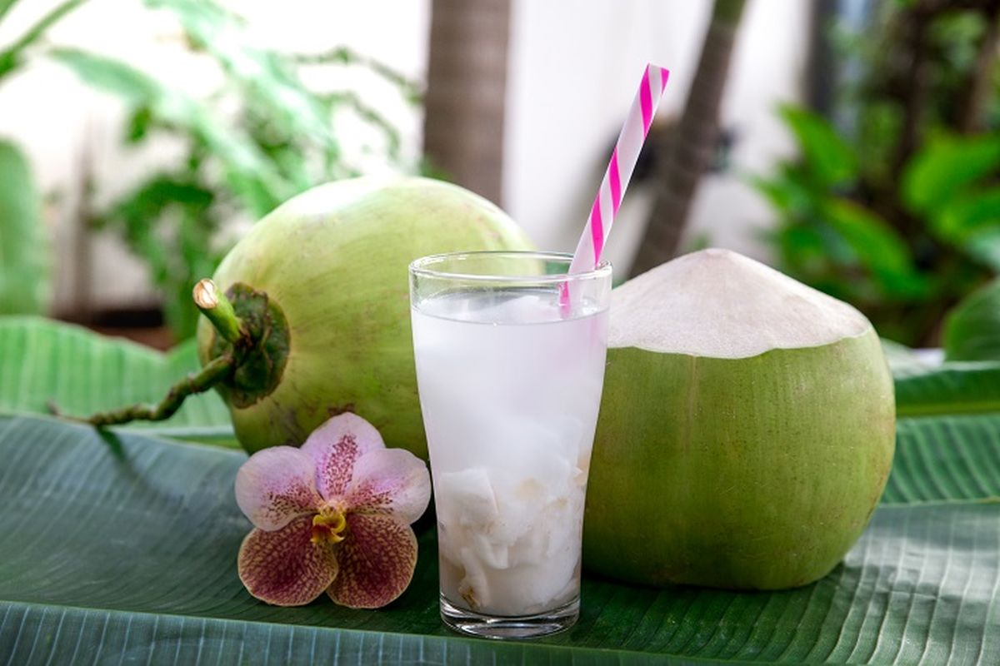
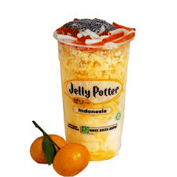
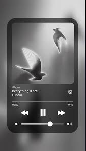
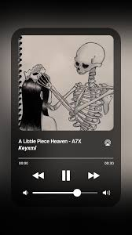
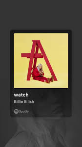
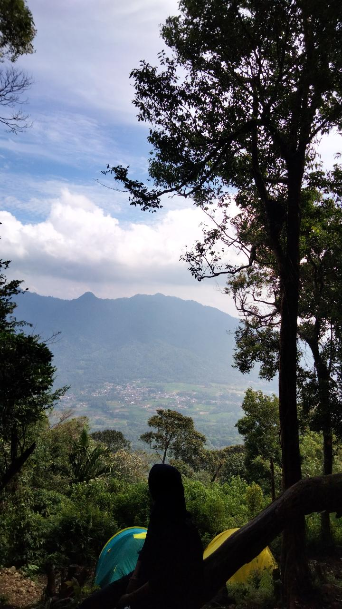
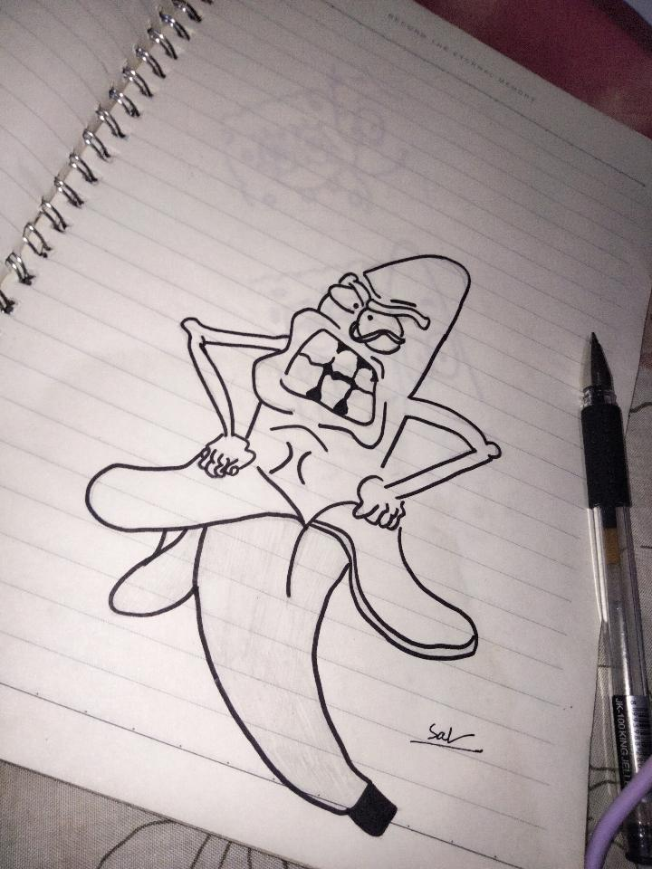
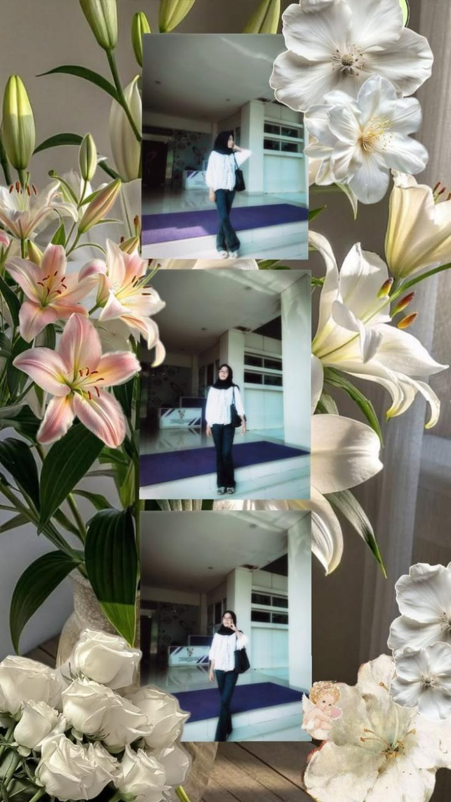

My Favorite 💖


🍜 Favorite Food
Tempe orek,bakso,Jelly Potter,dan es kelapa adalah makanan dan minuman favoritku karena memiliki rasa yang lezat dan selalu membuatku merasa senang.Tempe orek dan bakso menjadi pilihan makanan yang mengenyangkan,sedangkan Jelly Potter dan es kelapa memberikan kesegaran yang cocok dinikmati kapan saja. Meskipun sederhana semuanya memiliki tempat spesial dan selalu menjadi pilihan favoritku. 💖✨🌷



🎧 Favorite Songs
Aku menyukai lagu-lagu favoritku karena memiliki melodi yang indah, lirik yang bermakna, dan mampu menggambarkan berbagai perasaan yang sulit diungkapkan dengan kata-kata. Musik juga selalu menemaniku dalam berbagai suasana, baik saat belajar, bersantai, maupun ketika ingin mencari semangat dan ketenangan. 🎧🎧



📸 Hobby
Aku menyukai hobi-hobi ini karena dapat membuatku merasa senang, rileks, dan lebih bebas mengekspresikan diri. Melalui fotografi, diary, dan musik, aku bisa mengabadikan kenangan, menuangkan perasaan, serta menikmati momen-momen sederhana yang berarti dalam hidupku. 💖📸 📸

